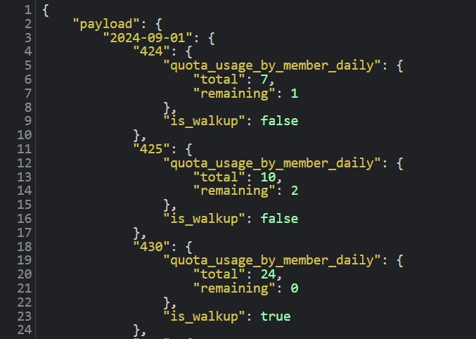
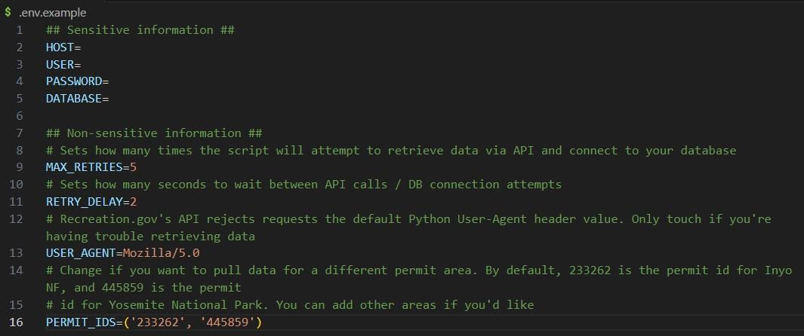

recdotgov
Overview
Excited to share a project that I've been working on: recdotgov
recdotgov is a data engineering project built in Python to scrape, snapshot, and store backcountry permit availability data from www.recreation.gov. Being able to snag a permit for the trailheads I want in the Eastern Sierra Nevada has always been tricky, so I figured it would be interesting to see if I could find any trends by tracking permit availability over time.
I set up the script to run every 15 minutes on my Synology NAS, collecting any changes that occur between runs. I'll follow up with analysis of the data that this pipeline collects in the future.
For now, I want to reflect on building recdotgov and share some lessons learned.
Reflections
1. Network Tools & Open Data
The inspiration for this project was to create some sort of data engineering / automated ETL, as it's something I'm interested in growing into professionally. To do this sort of project, I needed a data source to work with, so www.recreation.gov seemed like a great blend between my interests in hiking and data.
I was jazzed to learn the site had a free API, RIDB 1.0.0, but bummed to discover that the /reservations endpoint didn't work. Fortunately, the internet came to my rescue, as I found this Medium article which showed how someone had been able to find programmatic campsite data using developer tools.
I tried the same approach, and after poking around I found that this url structure returns availability data programmatically:
|
https://www.recreation.gov/api/permitinyo/<permit_id>/availabilityv2?start_date=<yyyy-mm-dd>&end_date=<yyyy-mm-dd>&commercial_acct=<false>
|

I don't know if it will work with any area, as the /permitinyo/ portion suggests it is at least regional to the Sierras, but I did confirm that it works for Yosemite National Park. Those are really the two backcountry zones I care about, so this is good enough for my purposes. One caveat to it is that your start & end date arguments have to be the start and end of a month (i.e., the API only returns data in exactly 1 month chunks).
Takeaway: I got more comfortable using developer tools and learned about some undocumented APIs by trial and error. Don't be so quick to reach for BeautifulSoup!
2. ETL vs ELT
Yes, I know the more modern approach in data engineering is ELT (load raw data, then transform), not ETL (transform the data, then load it to your destination). Despite this, I chose to follow an ETL pattern for recdotgov because I was worried about storage space on my local NAS.
In retrospect, this approach made my project less modular than it could be. Because I'm doing all my transformation while data is in transit from source to database, any changes to source data could break my transformations (and thus pipeline). Furthermore, if I want to adjust my transformation logic (e.g., what fields I pull in or how they're modeled), that would cause breaking changes to the database table that might be unrecoverable.
For someone who spends many hours a day writing dbt logic to transform data in a methodical stage → base [→ obt] → report structure, it feels like a rookie mistake to have my Python script be both responsible for moving the raw data from source to database as well as doing so in a way that provides a finished fact & dim model.
Takeaway: If I were start over, I would probably follow an ELT approach and drop the raw data somewhere then separately load the data into my database. I would also use a tool like dbt to separate transformation from extraction. This would make recdotgov more modular and maintainable.
3. Passwords & Environmental Variables
This project required user credentials to access my MariaDB. I'd never done anything that required handling secret credentials like this, so I wasn't really sure how to go about it.
I struggled for a long time trying different approaches to give my program access to the necessary credentials without somehow exposing them in git or the Docker container.
I ended up stumbling upon this repository, which offered a solution using a .env file that was included in both .gitignore and .dockerignore. I like that the use of .env.example makes it simple and easy for anyone who wants to use the program, so that's what I went with.

Takeaway: Always separate configuration details like environmental variables from logical code. For this project, I used a .env file that I ignored from git. There may be better approaches, but this seems to do the job.
4. Logging
This was the first project I've ever implemented logging for. Typically, I've just done the beginner print() method while debugging, but because I wanted to schedule and automate my script, keeping some sort of log felt valuable for when the pipeline inevitably breaks.
Overall, I'm pretty happy with how I implemented this. I do think I could have used logging levels more intelligently to distinguish between debugging during development (which I'd want to view in the terminal), versus production job logging (where I really only care about knowing whether the job succeeded and how many records were inserted into the database).
Additionally, I struggled a bit dealing with logging and Docker containers, as with each run the log file is written within its own container. I think there is a way to fix this using Docker volumes, but I didn't care enough to figure this out.
Takeaway: Logging levels may have been better configured to account for development vs prod environments. When logging across multiple Docker containers, look into using volumes to create a continuous record.
5. Improvements
Finally, there are a handful of changes I could make to improve the code:
The way I wrote the pipeline,
dim_entry_pointsgets overwritten every run. That data rarely changes, so rewriting this table is wasteful even though the record count is small. I could rework the code so thatentry_points.pyonly runs less frequently.I should add unit testing.
I could reduce repetition and make things more DRY. For example, the env variables code repeats in
main.py,entry_points.py, andsnapshots.py. How could I read in these variables only once?Additionally, a lot of the ETL code repeats between
entry_points.pyandsnapshots.py. I chose to write those files as a sequence ofextract(),transform(), andload()functions, but perhaps I could refactor the code so that the URLs & database table names are passed around as variables to avoid repeating a lot of the same procedural code.